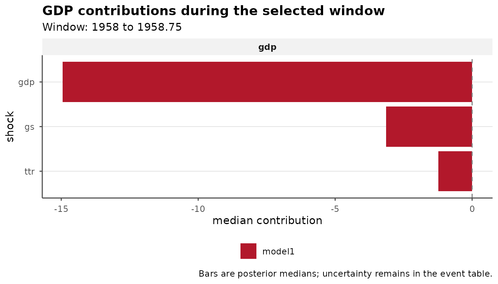

Historical Decompositions
Source:vignettes/historical-decomposition-events.Rmd
historical-decomposition-events.RmdHistorical decompositions from bsvars and bsvarSIGNs attribute the observed values of each variable to structural shocks at each point in time. bsvarPost aggregates these contributions over selected periods, ranks the contributions of individual shocks, and compares results across model specifications.
The analysis accepts a posterior model, a PosteriorHD
object, or a draw-level table of historical decompositions. Economically
meaningful shock labels should reflect the identification of the model.
The documentation of bsvars and
bsvarSIGNs describes estimation and computation of
historical decompositions. The examples below use stored posterior draws
to reproduce the reported results without re-estimating the models.
Posterior draws
Event-specific analysis requires posterior draws of historical
decompositions, not only pointwise posterior summaries. Obtain these
draws with tidy_hd(draws = TRUE):
hd_draws <- tidy_hd(post, draws = TRUE)
data.frame(
first = head(unique(as.character(hd_draws$time)), 1),
last = tail(unique(as.character(hd_draws$time)), 1),
draws = length(unique(hd_draws$draw))
)
#> first last draws
#> 1 1948.25 2024.25 200Each row identifies the model, variable, shock, observation, and posterior draw. Aggregation is performed separately for every draw. Posterior summaries therefore account for uncertainty in the contribution accumulated over the entire event period.
The full-sample historical decomposition provides the context for the event analysis. The figures show the main shock contributions as separate paths and as stacked contributions.


Event periods
The empirical question determines the event period. It should not be selected from the estimated ranking of shocks. The analysis should therefore:
- define the dates from the research question or an external chronology;
- match
startandendto the time labels and frequency of the data; and - assess sensitivity to reasonable neighbouring periods while retaining the prespecified result.
The example uses the four quarters from 1958 to
1958.75, which are present in both stored posterior
samples. No particular historical interpretation is assigned to this
period. Each sample contains 200 posterior draws. The economic
interpretation of every shock follows from the identifying restrictions
of the fitted model.
event_start <- "1958"
event_end <- "1958.75"
event <- tidy_hd_event(
hd_draws,
start = event_start,
end = event_end,
probability = 0.90
)
subset(
event,
variable == "gdp",
select = c(variable, shock, event_start, event_end,
median, lower, upper)
)
#> # A tibble: 3 × 7
#> variable shock event_start event_end median lower upper
#> <chr> <chr> <chr> <chr> <dbl> <dbl> <dbl>
#> 1 gdp gdp 1958 1958.75 -14.9 -53.5 24.4
#> 2 gdp gs 1958 1958.75 -3.15 -11.9 0.435
#> 3 gdp ttr 1958 1958.75 -1.23 -5.86 4.48tidy_hd_event()
sums the contribution of each shock over the inclusive period for every
posterior draw and then reports posterior summaries. Set
draws = TRUE to retain the aggregated draws for subsequent
calculations.
The largest posterior median does not establish that a shock was the dominant historical source of variation. Credible intervals describe posterior uncertainty about the aggregated contribution, while the economic meaning of the shock remains determined by the identification of the model.
Shock rankings
shock_ranking()
ranks shocks within each model and variable. The example reports results
for gdp.
ranking <- shock_ranking(
hd_draws,
start = event_start,
end = event_end,
variables = "gdp",
ranking = "absolute",
probability = 0.90
)
ranking[, c("variable", "shock", "median", "lower", "upper", "rank")]
#> # A tibble: 3 × 6
#> variable shock median lower upper rank
#> <chr> <chr> <dbl> <dbl> <dbl> <int>
#> 1 gdp gdp -14.9 -53.5 24.4 1
#> 2 gdp gs -3.15 -11.9 0.435 2
#> 3 gdp ttr -1.23 -5.86 4.48 3With ranking = "absolute", shocks are ordered by the
absolute posterior median of their contribution. Use
ranking = "signed" when the sign is part of the estimand.
In both cases, rank is based on posterior medians.
Overlapping credible intervals indicate uncertainty that is not
represented by this ordering.
The plot reports the sign and magnitude of each contribution and orders the bars by the absolute posterior median.
ranking_plot <- publish_bsvar_plot(
ranking,
family = "shock_ranking",
preset = "paper",
title = "GDP contributions during the selected window",
caption = "Bars are posterior medians; uncertainty remains in the event table."
)
ranking_plot
To plot contributions without ranking, use plot_hd_event().
The more specialized plot_hd_event_share(),
plot_hd_event_cumulative(),
and plot_hd_event_distribution()
show the composition of contributions, their accumulation within the
selected period, and their posterior distributions, respectively.
Comparison across model specifications
Comparisons of lag orders or prior distributions require the same
event period for every model. compare_hd_event()
applies the selected period to named posterior objects and indexes the
results by model specification.
event_comparison <- compare_hd_event(
baseline = post,
alternative = post_alt,
start = event_start,
end = event_end,
probability = 0.90
)
comparison_gdp <- subset(
event_comparison,
variable == "gdp",
select = c(model, shock, event_start, event_end,
median, lower, upper)
)
comparison_gdp
#> # A tibble: 6 × 7
#> model shock event_start event_end median lower upper
#> <chr> <chr> <chr> <chr> <dbl> <dbl> <dbl>
#> 1 baseline gdp 1958 1958.75 -14.9 -53.5 24.4
#> 2 baseline gs 1958 1958.75 -3.15 -11.9 0.435
#> 3 baseline ttr 1958 1958.75 -1.23 -5.86 4.48
#> 4 alternative gdp 1958 1958.75 -19.1 -51.5 17.0
#> 5 alternative gs 1958 1958.75 -0.00276 -6.11 3.89
#> 6 alternative ttr 1958 1958.75 -1.62 -6.60 4.49The comparison is descriptive. Similar posterior summaries across
specifications provide evidence of robustness to the considered changes,
but compare_hd_event() neither selects a model nor computes
the posterior probability of a difference between specifications. Names
such as baseline and alternative identify the
specifications in tables and plots.
Tables and figures
Posterior summaries can be reported in a labelled table, while the ranking plot can be saved separately. Both outputs are standard R objects and can be formatted for the intended application.
as_kable(
comparison_gdp,
caption = "GDP shock contributions in the selected event window",
digits = 2,
preset = "compact"
)| Model | Shock | Event start | Event end | Median | Lower | Upper |
|---|---|---|---|---|---|---|
| baseline | gdp | 1958 | 1958.75 | -14.95 | -53.50 | 24.36 |
| baseline | gs | 1958 | 1958.75 | -3.15 | -11.87 | 0.43 |
| baseline | ttr | 1958 | 1958.75 | -1.23 | -5.86 | 4.48 |
| alternative | gdp | 1958 | 1958.75 | -19.05 | -51.50 | 16.99 |
| alternative | gs | 1958 | 1958.75 | 0.00 | -6.11 | 3.89 |
| alternative | ttr | 1958 | 1958.75 | -1.62 | -6.60 | 4.49 |
ggplot2::ggsave(
"shock-ranking-1958.pdf",
ranking_plot,
width = 7,
height = 4
)For posterior summaries, response comparisons, and posterior probability statements, see Post-estimation Analysis with bsvarPost. Diagnostics for sign-restricted identification are presented in the dedicated bsvarSIGNs article.